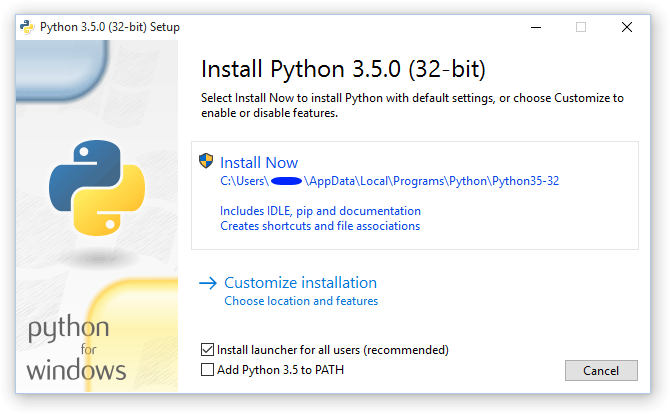

3. 在Windows上使用 Python¶
本文档旨在概述在 Microsoft Windows 上使用 Python 时应了解的特定于 Windows 的行为。
3.1. Installing Python¶
与大多数UNIX系统和服务不同，Windows系统没有预安装Python。为了使Python可用，很多年来CPython 团队已经编译了每一个 release 的Windows安装程序（MSI 包）。这些安装程序主要用于每个用户单独安装Python时，添加核心解释器和库。安装程序还可以为一台机器的所有用户安装，并且可以为应用程序本地分发提供单独的zip文件。
3.1.1. Supported Versions¶
如 PEP 11 中所述，Python 仅支持微软产品支持生命周期内的Windows 版本。这意味着 Python 3.6 支持Windows Vista和更新版本。如果需要Windows XP支持，请安装Python 3.4。
3.1.2. Installation Steps¶
四个 Python 3.6 安装程序可供下载 - 32位和64位版本的各有两个。 web installer （网络安装包）是一个小的初始化工具，它将在安装过程中，根据需要自动下载所需的组件。 offline installer （离线安装包）内含默认安装所需的组件，可选择功能仍需要Internet连接下载。请参阅 免下载安装 以了解在安装过程中避免下载的其他方法。
启动安装程序后，可以选择以下两个选项之一：
如果选择“Install Now（立即安装）”：
- 您 不 需要成为管理员（除非需要对C运行库进行系统更新，或者为所有用户安装 适用于Windows的Python启动器 ）
- Python将安装到您的用户目录中
- 适用于Windows的Python启动器 将根据第一页底部的选项安装
- 将安装标准库，测试套件，启动器和pip
- 如果选择将安装目录将添加到
PATH - 快捷方式仅对当前用户可见
选择“自定义安装”将允许您选择：要安装的功能、安装位置、其他选项或安装后的操作。如果要安装调试符号或二进制文件，您需要使用此选项。
如要为全部用户安装，应选择“自定义安装”。在这种情况下:
- 您可能需要提供管理凭据或批准
- Python 将安装到Program Files目录中
- 适用于Windows的Python启动器 将安装到Windows目录中
- 安装期间可以选择可选功能
- 标准库可以预编译为字节码
- 如果选中，安装目录将添加到系统
PATH - 快捷方式所有用户可用
3.1.3. 删除 MAX_PATH 限制¶
历史上Windows的路径长度限制为260个字符。这意味着长于此的路径将无法解决并导致错误。
在最新版本的Windows中，此限制可以扩展到大约32,000个字符。但需要管理员权限激活 “启用Win32长路径” 组策略，或将注册表值 HKEY_LOCAL_MACHINE\SYSTEM\CurrentControlSet\Control\FileSystem@LongPathsEnabled 设置为 1。
这允许 open() 函数 os 模块和大多数其他路径功能在使用字符串时，能接受并返回长度超过260个字符的路径。 （在Windows上不推荐使用字节作为路径，并且在使用字节时此功能不可用。）
更改上述选项后，无需进一步配置。
在 3.6 版更改: Python中启用了对长路径的支持。
3.1.4. 无UI 安装¶
安装程序UI中的所有选项也可以从命令行指定，允许脚本安装程序在许多机器上复制安装，而无需用户交互。还可以在不禁用UI的情况下设置这些选项，以更改一些默认值。
要完全隐藏安装程序UI并静默安装Python，请使用 /quiet 选项。要跳过用户交互但仍然显示进度和错误，请使用 /passive 选项。可以通过 /uninstall 选项立即开始删除Python - - 不会显示任何提示。
所有其他选项都传递为 name=value ，其中值通常是 0 来禁用某个特性， 1 来启用某个特性或路径。可用选项的完整列表如下所示。
| 名称 | 描述 | 默认值 |
|---|---|---|
| InstallAllUsers | 执行全局安装。 | 0 |
| TargetDir | 安装目录 | 基于InstallAllUsers选择 |
| DefaultAllUsersTargetDir | 所有用户安装的默认安装目录 | %ProgramFiles%\Python X.Y 或 %ProgramFiles(x86)%\Python X.Y |
| DefaultJustForMeTargetDir | 仅为我安装的默认安装目录 | %LocalAppData%\Programs\PythonXY or
%LocalAppData%\Programs\PythonXY-32 |
| DefaultCustomTargetDir | UI中显示的默认自定义安装目录 | （空） |
| AssociateFiles | 如果还安装了启动器，则创建文件关联。 | 1 |
| CompileAll | 将所有 .py 文件编译为 .pyc 。 |
0 |
| PrependPath | 将install和Scripts目录添加到 PATH 以及将 .PY 添加到 PATHEXT |
0 |
| Shortcuts | 如果已安装，为解释器，文档和IDLE创建快捷方式 | 1 |
| Include_doc | 安装Python手册 | 1 |
| Include_debug | 安装调试二进制文件 | 0 |
| Include_dev | 安装开发人员头文件和库 | 1 |
| Include_exe | 安装 python.exe 及相关文件 |
1 |
| Include_launcher | 安装 适用于Windows的Python启动器 . | 1 |
| InstallLauncherAllUsers | 为所有用户安装 适用于Windows的Python启动器 。 | 1 |
| Include_lib | 安装标准库和扩展模块 | 1 |
| Include_pip | 安装捆绑的pip和setuptools | 1 |
| Include_symbols | 安装调试符号(*.pdb) | 0 |
| Include_tcltk | 安装Tcl/Tk 支持和IDLE | 1 |
| Include_test | 安装标准库测试套件 | 1 |
| Include_tools | 安装实用程序脚本 | 1 |
| LauncherOnly | 仅安装启动器。这将覆盖大多数其他选项。 | 0 |
| SimpleInstall | 禁用大多数安装UI | 0 |
| SimpleInstallDescription | 使用简化安装UI时显示的自定义消息。 | （空） |
例如，要以静默方式全局安装默认的Python，您可以（在命令提示符>）使用以下命令:
python-3.6.0.exe /quiet InstallAllUsers=1 PrependPath=1 Include_test=0
要允许用户在没有测试套件的情况下轻松安装Python的个人副本，可以使用以下命令提供快捷方式。这将显示一个简化的初始页面，不允许自定义:
python-3.6.0.exe InstallAllUsers=0 Include_launcher=0 Include_test=0
SimpleInstall=1 SimpleInstallDescription="Just for me, no test suite."
（请注意，省略启动器也会省略文件关联，并且仅在全局安装包含启动器时才建议用于每用户安装。）
上面列出的选项也可以在一个名为 unattend.xml 的文件中与可执行文件一起提供。此文件指定选项和值的列表。作为属性提供的值，（如果可能）它将转换为数字。作为文本提供的值，始终保留为字符串。此示例文件设置与上一示例采用相同的选项：
<Options>
<Option Name="InstallAllUsers" Value="no" />
<Option Name="Include_launcher" Value="0" />
<Option Name="Include_test" Value="no" />
<Option Name="SimpleInstall" Value="yes" />
<Option Name="SimpleInstallDescription">Just for me, no test suite</Option>
</Options>
3.1.5. 免下载安装¶
由于下载的初始安装包中未包含Python的某些可选功能，如果选择安装这些功能可能需要Internet连接。为了避免这种需要，可以按需下载所有可能的组件，以创建一个完整的布局，该布局将不再需要internet连接，而不管所选择的特性是什么。请注意，此下载可能比要求的要大，但是如果要执行大量安装，则拥有本地缓存的副本非常有用。
Execute the following command from Command Prompt to download all possible
required files. Remember to substitute python-3.6.0.exe for the actual
name of your installer, and to create layouts in their own directories to
avoid collisions between files with the same name.
python-3.6.0.exe /layout [optional target directory]
您也可以指定 /quiet 选项来隐藏进度显示。
3.1.6. 修改安装¶
安装Python后，您可以通过Windows中的“程序和功能”工具添加或删除功能。选择Python条目并选择“卸载/更改”以在维护模式下打开安装程序。
“修改” 允许您通过修改复选框来添加或删除功能 - 未更改的复选框将不会安装或删除任何内容。在此模式下无法更改某些选项，例如安装目录；要修改这些，您需要完全删除然后重新安装Python。
“修复” 将使用当前设置验证应安装的所有文件，并替换已删除或修改的任何文件
“卸载” 将完全删除Python，但 适用于Windows的Python启动器 除外，它在“程序和功能”中有自己的条目。
3.1.7. 其他平台¶
随着Python的不断发展，不再支持以前曾经支持的一些平台（由于缺少用户或开发人员）。检查 PEP 11 了解所有不支持的平台的详细信息。
- Windows CE 仍然受支持。
- Cygwin 安装包也提供安装Python解释器 (cf. Cygwin package source, Maintainer releases)
有关具有预编译安装程序平台的详细信息，请参阅 Python for Windows
参见
- Python on XP
- “7 Minutes to “Hello World!”” by Richard Dooling, 2006
- Installing on Windows
- in “Dive into Python: Python from novice to pro” by Mark Pilgrim, 2004, ISBN 1-59059-356-1
- For Windows users
- in “Installing Python” in “A Byte of Python” by Swaroop C H, 2003
3.2. 替代捆绑包¶
除了标准的CPython发行版之外，还有一些包含附加功能的修改包。以下是热门版本及其主要功能的列表：
- ActivePython
- 具有多平台兼容性的安装程序，文档，PyWin32
- Anaconda
- 流行的科学模块（如numpy，scipy和pandas）和
conda包管理器。 - Canopy
- 具有编辑器和其他开发工具的“全面的Python分析环境”。
- WinPython
- 特定于Windows的发行版，包含用于构建包的预构建科学包和工具。
请注意，这些软件包可能不包含最新版本的Python或其他库，并且不由核心Python团队维护或支持。
3.3. 配置Python¶
要从命令提示符方便地运行Python，您可以考虑在Windows中更改一些默认环境变量。虽然安装程序提供了为您配置PATH和PATHEXT变量的选项，但这仅适用于单版本、全局安装。如果您经常使用多个版本的Python，请考虑使用 适用于Windows的Python启动器 。
3.3.1. 附录：设置环境变量¶
Windows允许在用户级别和系统级别永久配置环境变量，或临时在命令提示符中配置环境变量。
要临时设置环境变量，请打开命令提示符并使用 set 命令：
C:\>set PATH=C:\Program Files\Python 3.6;%PATH%
C:\>set PYTHONPATH=%PYTHONPATH%;C:\My_python_lib
C:\>python
这些环境变量的更改将应用于在该控制台中执行的任何其他命令，并且，由该控制台启动的任何应用程序都继承设这些设置。
在百分号中包含的变量名将被现有值替换，允许在开始或结束时添加新值。通过将包含 python.exe 的目录添加到开头来修改 PATH 是确保启动正确版本的Python的常用方法。
要永久修改默认环境变量，请单击“开始”并搜索“编辑环境变量”，或打开“系统属性” Advanced system settings ，然后单击 Environment Variables 按钮。在此对话框中，您可以添加或修改用户和系统变量。要更改系统变量，您需要对计算机进行无限制访问（即管理员权限）。
注解
Windows会将用户变量串联的系统变量 之后 ，这可能会在修改 PATH 时导致意外结果。
PYTHONPATH 变量被Python 2和Python 3的所有版本使用，因此除非它只包含与所有已安装的Python版本兼容的代码，否则不要永久配置此变量。
参见
- https://support.microsoft.com/kb/100843
- Windows NT 的环境变量
- https://technet.microsoft.com/en-us/library/cc754250.aspx
- 用于临时修改环境变量的SET命令
- https://technet.microsoft.com/en-us/library/cc755104.aspx
- 用于永久修改环境变量的SETX命令
- https://support.microsoft.com/kb/310519
- 如何在Windows XP中管理环境变量
- https://www.chem.gla.ac.uk/~louis/software/faq/q1.html
- 设置环境变量（For Windows 2000/NT），Louis J. Farrugia
3.3.2. 查找Python可执行文件¶
在 3.5 版更改.
除了使用自动创建的Python解释器的开始菜单项之外，您可能还想在命令提示符下启动Python。安装程序有一个选项可以为您设置。
在安装程序的第一页上，可以选择标记为“将Python添加到环境变量”的选项，以使安装程序将安装位置添加到 PATH 。还添加了 Scripts\ 文件夹的位置。这允许你输入 python 来运行解释器，并且 pip 用于包安装程序。因此，您还可以使用命令行选项执行脚本，请参阅 命令行 文档。
如果在安装时未启用此选项，则始终可以重新运行安装程序，选择“修改”并启用它。或者，您可以使用 附录：设置环境变量 的方法手动修改 PATH 。您需要将Python安装目录添加到 PATH 环境变量中，该内容与其他条目用分号分隔。示例变量可能如下所示（假设前两个条目已经存在）:
C:\WINDOWS\system32;C:\WINDOWS;C:\Program Files\Python 3.6
3.4. 适用于Windows的Python启动器¶
3.3 新版功能.
用于Windows的Python启动器是一个实用程序，可帮助定位和执行不同的Python版本。它允许脚本（或命令行）指示特定Python版本的首选项，并将定位并执行该版本。
与 PATH 变量不同，启动器将正确选择最合适的Python版本。它更倾向于按用户安装而不是系统安装，并按语言版本排序，而不是使用最新安装的版本。
3.4.1. 入门¶
3.4.1.1. 从命令行¶
在 3.6 版更改.
全局安装Python 3.3及更高版本将把启动器放在你的 PATH 上。启动程序与所有可用的Python版本兼容，因此安装哪个版本无关紧要。要检查启动程序是否可用，请在命令提示符中执行以下命令：
py
您应该会发现已安装的最新版本的Python已启动 - 它可以正常退出，并且将指定的任何其他命令行参数直接发送到Python。
如果您安装了多个版本的Python（例如，2.7和 3.6 ），您会注意到Python 3.6 启动 - 如果要启动Python 2.7，尝试命令：
py -2.7
如果您想使用 Python 2.x 的最新版本，请尝试以下命令：
py -2
你会发现Python 2.x 的最新版本已启动。
如果您看到以下错误，则表明您没有安装启动器：
'py' is not recognized as an internal or external command,
operable program or batch file.
除非在安装时选择了该选项，单个用户安装的Python不会将启动程序添加到 PATH 。
3.4.1.2. 从虚拟环境¶
3.5 新版功能.
如果启动程序运行时没有明确的Python版本，并且虚拟环境（使用标准库创建 venv 模块或外部 virtualenv 工具）处于活动状态，则启动程序将运行虚拟环境的解释器而不是全局的。要运行全局解释器，请停用虚拟环境，或显式指定全局Python版本。
3.4.1.3. 从脚本¶
让我们创建一个测试Python脚本 - 创建一个名为``hello.py``的文件，其中包含以下内容
#! python
import sys
sys.stdout.write("hello from Python %s\n" % (sys.version,))
从hello.py所在的目录中，执行以下命令：
py hello.py
您应该注意到最新的Python 2.x安装的版本号已打印出来。现在尝试将第一行更改为：
#! python3
现在，重新执行该命令应该打印最新的Python 3.x信息。与上面的命令行示例一样，你可以更明确的指定版本限定符。假设您安装了Python 2.6，请尝试将第一行更改为 #! python2.6 ，你会发现打印的2.6版本信息。
请注意，与交互式使用不同，裸“python”将使用您已安装的Python 2.x的最新版本。这是为了向后兼容及兼容Unix，其中命令 python 通常是指Python 2。
3.4.1.4. 从文件关联¶
安装时应该将启动器与Python文件（即 .py, .pyw, .pyc 文件）相关联。这意味着当您从Windows资源管理器中双击其中一个文件时，将使用启动程序，因此您可以使用上述相同的工具让脚本指定应使用的版本。
这样做的主要好处是，单个启动程序可以同时支持多个Python版本，具体取决于第一行的内容。
3.4.2. Shebang Lines¶
如果脚本文件的第一行以 #! 开头，则称为 “shebang” 行。Linux和其他类Unix操作系统都有对这些行的本机支持，它们通常在此类系统上用来指示应该如何执行脚本。这个启动器允许在Windows上对Python脚本使用相同的工具，上面的示例演示了它们的使用。
为了允许Python脚本中的shebang行在Unix和Windows之间移植，该启动器支持许多“虚拟”命令来指定要使用的解释器。支持的虚拟命令是：
/usr/bin/env python/usr/bin/python/usr/local/bin/pythonpython
例如，如果脚本开始的第一行
#! /usr/bin/python
将找到并使用默认的Python。因为在Unix上编写的许多Python脚本已经有了这一行，你应该发现这些脚本可以由启动器使用而无需修改。如果您在Windows上编写一个新脚本，希望在Unix上有用，那么您应该使用以 /usr 开头的一个shebang行。
Any of the above virtual commands can be suffixed with an explicit version
(either just the major version, or the major and minor version) - for example
/usr/bin/python2.7 - which will cause that specific version to be located
and used.
shebang line的 /usr/bin/env 形式还有一个特殊属性。在寻找已安装的Python解释器之前，此表单将搜索可执行文件 PATH 以获取Python可执行文件。这对应于Unix中 env 程序的行为，该程序将在 PATH 执行搜索。
3.4.3. shebang lines 的参数¶
shebang lines 还可以指定要传递给Python解释器的其他选项。例如，如果你有一个shebang lines ：
#! /usr/bin/python -v
然后Python将以 -v 选项启动
3.4.4. 自定义¶
3.4.4.1. 通过INI文件自定义¶
启动程序将搜索两个.ini文件 - 在当前用户的 “application data” 目录中搜索 py.ini （即通过使用 CSIDL_LOCAL_APPDATA 调用Windows函数 SHGetFolderPath 返回的目录）以及与启动器位于同一目录中的 py.ini 。相同的.ini文件既用于启动器的“控制台”版本（即 py.exe），也用于“windows”版本（即pyw.exe）
“应用程序目录”中指定的自定义优先于可执行文件旁边.ini文件的自定义，因此对启动程序旁边的.ini文件不具有写访问权限的用户可以覆盖该全局.ini文件中的命令。
3.4.4.2. 自定义默认的Python版本¶
In some cases, a version qualifier can be included in a command to dictate which version of Python will be used by the command. A version qualifier starts with a major version number and can optionally be followed by a period (‘.’) and a minor version specifier. If the minor qualifier is specified, it may optionally be followed by “-32” to indicate the 32-bit implementation of that version be used.
例如，一个shebang line 的 #!python 行没有版本限定符，而 #!python3 有一个版本限定符，它只指定一个主要版本。
If no version qualifiers are found in a command, the environment variable
PY_PYTHON can be set to specify the default version qualifier - the default
value is “2”. Note this value could specify just a major version (e.g. “2”) or
a major.minor qualifier (e.g. “2.6”), or even major.minor-32.
如果没有找到次要版本限定符，则可以设置环境变量 PY_PYTHON{major} （其中 {major} 是上面确定的当前主要版本限定符）以指定完整版本。如果没有找到这样的选项，启动器将枚举已安装的Python版本并使用为主要版本找到的最新次要版本，尽管不能保证，但该版本可能是该系列中最新安装的版本。
On 64-bit Windows with both 32-bit and 64-bit implementations of the same (major.minor) Python version installed, the 64-bit version will always be preferred. This will be true for both 32-bit and 64-bit implementations of the launcher - a 32-bit launcher will prefer to execute a 64-bit Python installation of the specified version if available. This is so the behavior of the launcher can be predicted knowing only what versions are installed on the PC and without regard to the order in which they were installed (i.e., without knowing whether a 32 or 64-bit version of Python and corresponding launcher was installed last). As noted above, an optional “-32” suffix can be used on a version specifier to change this behaviour.
示例：
- 如果没有设置相关选项，命令
python和python2将使用安装的最新Python 2.x版本，命令python3将使用最新安装的Python 3.x. - 命令
python3.1和python2.7根本不会查阅任何选项，因为版本已完全指定。 - 如果
PY_PYTHON=3，命令``python`` 和python3都将使用最新安装的Python 3版本。 - 如果
PY_PYTHON=3.1-32，命令python将使用3.1的32位实现，而命令python3将使用最新安装的Python（PY_PYTHON根本没有被视为指定了主要版本。） - 如果
PY_PYTHON=3且PY_PYTHON3=3.1，命令python和python3都将特别使用3.1
除环境变量外，还可以在启动程序使用的.INI文件中配置相同的设置。 INI文件中的部分称为 [defaults] ，键名称将与没有前导 PY_ 前缀的环境变量相同（并注意INI文件中的键名不区分大小写） 。）环境变量的内容将覆盖INI文件中指定的内容。
例如:
- 设置
PY_PYTHON=3.1等同于包含以下内容的INI文件：
[defaults]
python=3.1
- 设置
PY_PYTHON=3和PY_PYTHON3=3.1相当于包含以下内容的INI文件：
[defaults]
python=3
python3=3.1
3.4.5. 诊断¶
如果设置了环境变量 PYLAUNCH_DEBUG （任何值），启动器将诊断信息打印到stderr（即：控制台）。虽然这些信息同时具有冗长 和 简洁性，但它应该允许您查看Python的版本、选择特定版本的原因以及用于执行目标Python的确切命令行。
3.5. 查找模块¶
Python通常将其库（以及您的site-packages文件夹）存储在安装目录中。因此，如果您已将Python安装到 C:\Python\ ，则默认库将驻留在 C:\Python\Lib\ 中，第三方模块存储在 C:\Python\Lib\site-packages\ 。
To completely override sys.path, create a ._pth file with the same
name as the DLL (python36._pth) or the executable (python._pth) and
specify one line for each path to add to sys.path. The file based on the
DLL name overrides the one based on the executable, which allows paths to be
restricted for any program loading the runtime if desired.
当文件存在时，将忽略所有注册表和环境变量，启用隔离模式，并且：除非文件中的一行指定 import site ，否则不会导入 site 。以 ＃ 开头的空白路径和行将被忽略。每个路径可以是绝对的或相对于文件的位置。不允许使用除 site 以外的导入语句，并且不能指定任意代码。
Note that .pth files (without leading underscore) will be processed normally
by the site module.
当找不到 ._pth 文件时， sys.path 是如何在Windows上填充的：
- 在开始时，添加一个空条目，该条目对应于当前目录。
- 如果环境变量
PYTHONPATH存在，如 环境变量 中所述，则接下来添加其条目。请注意，在Windows上，此变量中的路径必须用分号分隔，以区别于驱动器标识符中使用的冒号（C:\等）。 - 附加的 “application paths” 可以同时添加到注册表` HKEY_CURRENT_USER` 和
HKEY_LOCAL_MACHINE分支下的:samp:\SOFTWARE\Python\PythonCore\{version}\PythonPath 中作为子键。以分号分隔的路径字符串作为默认值的子键将导致每个路径添加到sys.path。（请注意，所有已知的安装程序都只使用HKLM，因此HKCU通常为空。） - 如果设置了环境变量
PYTHONHOME，则将其假定为 “Python 主目录” 。否则，主Python可执行文件的路径用于定位 “landmark 文件” （Lib\os.py或pythonXY.zip）以推断 ”Python 主目录“ 。如果找到了Python主目录，则基于该文件夹将相关的子目录添加到sys.path（Lib,plat-win等）。否则，核心Python路径是从存储在注册表中的PythonPath构造的。 - 如果找不到Python Home，也没有指定
PYTHONPATH环境变量，并且找不到注册表项，则使用具有相对条目的默认路径（例如.\Lib; .\plat-win等等）。
如果在主可执行文件旁边或在可执行文件上一级的目录中找到 pyvenv.cfg 文件，则以下变体适用：
- 如果``home`` 是一个绝对路径，并且
PYTHONHOME未设置，则在推断起始位置时使用此路径而不是主可执行文件的路径
这一切的最终结果是：
- 运行
python.exe，或主Python目录中的任何其他.exe（安装版本，或直接来自PCbuild目录）时，推导出核心路径，并忽略注册表中的核心路径。始终读取注册表中的其他“应用程序路径”。 - 当Python托管在另一个.exe（不同的目录，通过COM嵌入等）时，将不会推断出“Python Home”，因此使用了来自注册表的核心路径。始终读取注册表中的其他“应用程序路径”。
- 如果Python找不到它的主目录并且没有注册表值（冻结的.exe，一些非常奇怪的安装设置），那么你会得到一条带有一些默认但相对的路径的路径。
对于那些想要将Python捆绑到其应用程序或发行版中的人，以下建议将防止与其他安装冲突：
- 在您的可执行文件中包含一个
._pth文件，其中包含目录。这将忽略注册表和环境变量中列出的路径，并忽略site，除非列出import site。 - If you are loading
python3.dllorpython36.dllin your own executable, explicitly callPy_SetPath()or (at least)Py_SetProgramName()beforePy_Initialize(). - 清除 和/或 覆盖
PYTHONPATH并在启动来自应用程序的python.exe之前设置PYTHONHOME。 - 如果您不能使用前面的建议（例如，您是一个允许人们直接运行：file:python.exe`的分发版），请确保安装目录中存在landmark 文件（:file:`Lib\os.py）。（请注意，在zip文件中不会检测到该文件，但会检测到正确命名的zip文件。）
这些将确保系统范围安装中的文件不会优先于与应用程序捆绑在一起的标准库的副本。否则，用户可能会在使用您的应用程序时遇到问题请注意，第一个建议是最好的，因为其他建议可能仍然容易受到注册表和用户站点包中的非标准路径的影响。
在 3.6 版更改:
- 添加
._pth文件支持并从pyvenv.cfg中删除applocal选项- 当直接与可执行文件相邻时，添加
pythonXX.zip作为潜在的 landmark 。
3.6 版后已移除:在
Modules（不是PythonPath）下的注册表中指定的模块可以通过以下方式导入importlib.machinery.WindowsRegistryFinder。在Windows上，此查找程序在3.6.0及更早版本的可用，但可能需要在将来显式添加到sys.meta_path
3.6. 附加模块¶
尽管Python的目标是在所有平台中都可移植，但是Windows有一些独特的特性。在标准库和外部都有一些模块和代码片段在使用这些特性。
特定于Windows的标准模块记录在 Windows系统相关模块 中。
3.6.1. PyWin32¶
Mark Hammond 的 PyWin32 模块是一组用于高级Windows特定支持的模块。这包括以下实用程序：
- Component Object Model (COM)
- Win32 API 调用
- 注册
- 事件日志
- Microsoft Foundation Classes (MFC) 用户界面
PythonWin 是PyWin32附带的一个示例MFC应用程序。它是一个内置调试器的可嵌入IDE。
参见
- Win32 How Do I…?
- by Tim Golden
- Python and COM
- by David and Paul Boddie
3.6.2. cx_Freeze¶
cx_Freeze is a distutils
extension (see 扩展 Distutils) which wraps Python scripts into
executable Windows programs (*.exe files). When you have done this,
you can distribute your application without requiring your users to install
Python.
3.7. 在Windows上编译Python¶
如果你想自己编译CPython，首先要做的是获取 source. 。您可以下载最新版本的源代码，也可以重新签出 checkout. 。
源代码树包含Microsoft Visual Studio 2015的构建解决方案和项目文件，它是用于构建官方Python版本的编译器。这些文件位于 PCbuild 目录中。
检查 PCbuild/readme.txt 以获取有关构建过程的一般信息。
有关扩展模块，请参阅 在Windows平台编译C和C++扩展 。
参见
- Python + Windows + distutils + SWIG + gcc MinGW
- 或 “Creating Python extensions in C/C++ with SWIG and compiling them with MinGW gcc under Windows” 或 “Installing Python extension with distutils and without Microsoft Visual C++” by Sébastien Sauvage, 2003
- MingW – Python extensions
- by Trent Apted et al, 2007
3.8. Embedded Distribution¶
3.5 新版功能.
嵌入式发行版是一个包含最小Python环境的ZIP文件。它旨在作为另一个应用程序的一部分，而不是由最终用户直接访问。
When extracted, the embedded distribution is (almost) fully isolated from the
user’s system, including environment variables, system registry settings, and
installed packages. The standard library is included as pre-compiled and
optimized .pyc files in a ZIP, and python3.dll, python36.dll,
python.exe and pythonw.exe are all provided. Tcl/tk (including all
dependants, such as Idle), pip and the Python documentation are not included.
注解
嵌入式发行版不包括 Microsoft C Runtime ，应用程序安装程序负责提供此功能。运行时可能已经预先安装在用户的系统上或通过Windows Update自动安装，并且可以通过在系统目录中找到 ucrtbase.dll 来检测
第三方软件包应该由应用程序与嵌入式发行版一起安装。这个发行版不支持像常规Python安装那样使用pip来管理依赖关系，不过可以小心地将pip包含进来并使用它进行自动更新。通常，第三方包应该作为应用程序的一部分(“打包”)处理，以便开发人员在向用户提供更新之前能够确保与新版本兼容。
下面描述了这个发行版的两个推荐用例。
3.8.1. Python应用程序¶
用Python编写的应用程序并不一定要求用户了解这一事实。在这种情况下，可以使用嵌入式发行版在安装包中包含Python的私有版本。根据它应该有多透明(或者相反，它应该看起来有多专业)，有两个选项。
使用专门的可执行文件作为启动程序需要一些编码，但为用户提供了最透明的体验。使用定制的启动器，没有明显的迹象表明程序是在Python上运行的：图标可以定制，公司和版本信息可以指定，文件关联可以正常运行。在大多数情况下，自定义启动程序应该只需使用硬编码的命令行就能调用 Py_Main
更简单的方法是提供批处理文件或生成的快捷方式，使用所需的命令行参数直接调用 python.exe 或 pythonw.exe 。在这种情况下，应用程序将显示为Python而不是其实际名称，并且用户可能无法将其与其他正在运行的Python进程或文件关联区分开来。
对于后一种方法，包应该与Python可执行文件一起作为目录安装，以确保它们在路径上可用。使用专用的启动器，包可以位于其他位置，因为在启动应用程序之前有机会指定搜索路径。
3.8.2. 嵌入Python¶
用本地代码编写的应用程序通常需要某种形式的脚本语言，嵌入式Python发行版可以用于此目的。通常，应用程序的大部分都是本机代码，某些部分将调用 python.exe 或直接使用 python3.dll 。无论是哪种情况，将嵌入的发行版解压缩到应用程序安装的子目录中就足以提供可加载的Python解释器。
与应用程序使用一样，包可以安装到任何位置，因为在初始化解释器之前有机会指定搜索路径。否则，使用嵌入式发行版和常规安装之间没有根本区别。
3.9. Other resources¶
参见
- Python Programming On Win32
- “Help for Windows Programmers” by Mark Hammond and Andy Robinson, O’Reilly Media, 2000, ISBN 1-56592-621-8
- A Python for Windows Tutorial
- by Amanda Birmingham, 2004
- PEP 397 - Python launcher for Windows
- The proposal for the launcher to be included in the Python distribution.